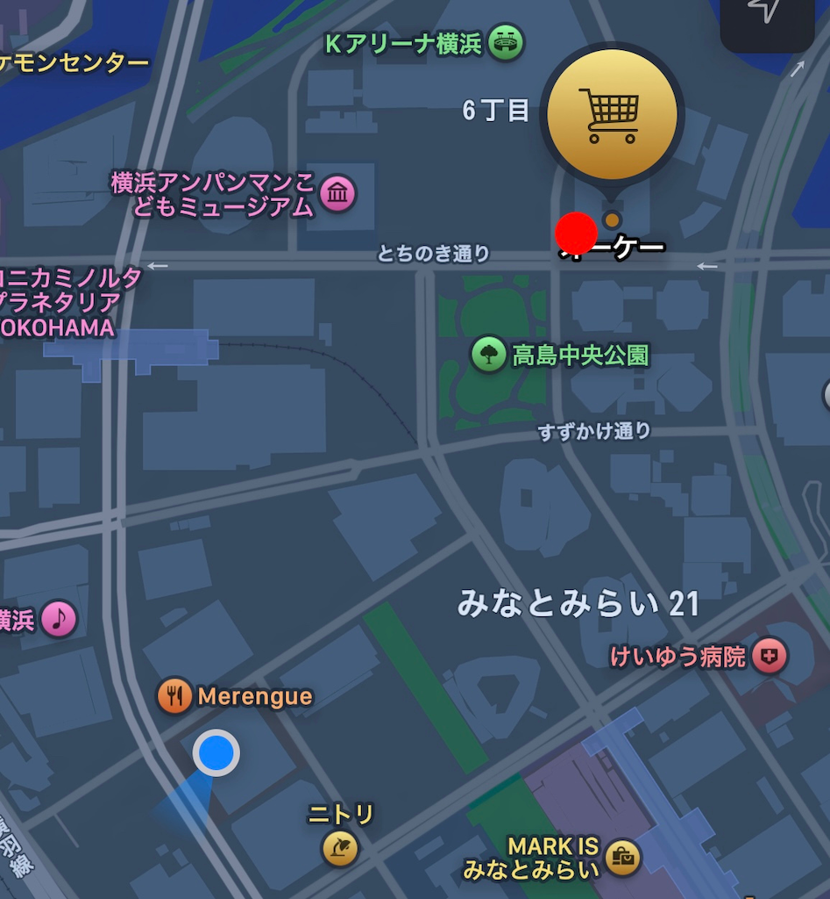

⭐️移動観察
観察場所
神奈川大学からオーケー
観察項目
通行人が身につけているカバン６種類（リュック、肩掛け、ウェストポーチ、ビジネスバック、キャリーケース、トートバッグ）
観察日時
10/21（火）15時開始（移動時間約16分間）
⭐️定点観察
観察場所
オーケーの入り口

観察項目
通行人が身につけているカバン６種類（リュック、肩掛け、ウェストポーチ、ビジネスバック、キャリーケース、トートバッグ）
観察日時
10/21（火）15時20分〜15時50分ごろ（約25分間）
⭐️予想
観察場所はオフィスビルが多いので、ビジネスバッグや書類などが入る大きめのトートバッグが大半だと考える。
⭐️観察結果
⭐️考察・まとめ
予想よりもリュックや肩掛けのカバンを身につけている人が多く、ビジネスバッグを身につけている人は少なかった。
観察日時が平日の15時前後だったので出歩く会社員の数が少なくかったことがビジネスバッグを身につけている人の少なさに影響していると考えた。
また、その時間帯にスーパーに来る人はトートバッグや肩掛けのカバンなどの物の出し入れがしやすいものを選ぶ傾向があると言えると思った。
観察場所付近にアンパンマンミュージアムがあり、子連れの人は両手が開くリュックや肩掛けのカバンを使う傾向があることもこのような結果に影響していると考えた。
今回のフィールドワークで、観察前の予想と大きく違う点もあれば、予想通りだった点もあったため、実際に路上に出て観察をすることで新しい発見をすることができ、固定観念に縛られない考え方に繋がると思った。
また、次回また観察する際は、身につけている物だけでなく、身につけている人の特徴など、より詳しい項目も見てみたいと思った。